Før og efter
Træk i det orange håndtag og se forskellen. Alle billeder er fra rigtige opgaver i Aalborg og omegn, taget samme dag.
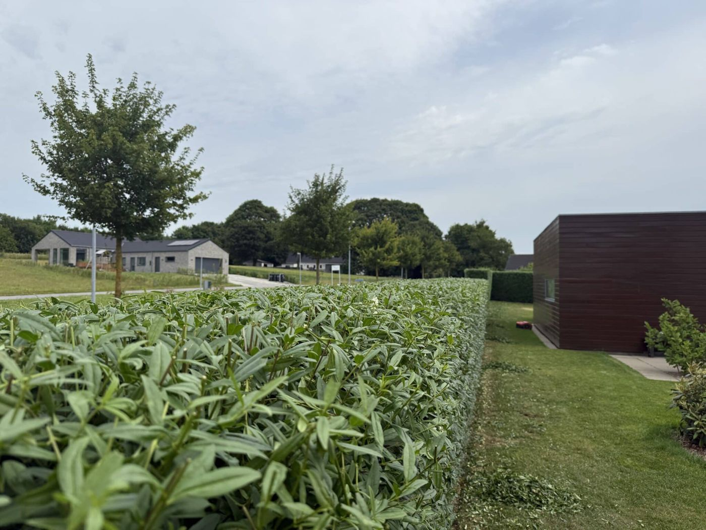
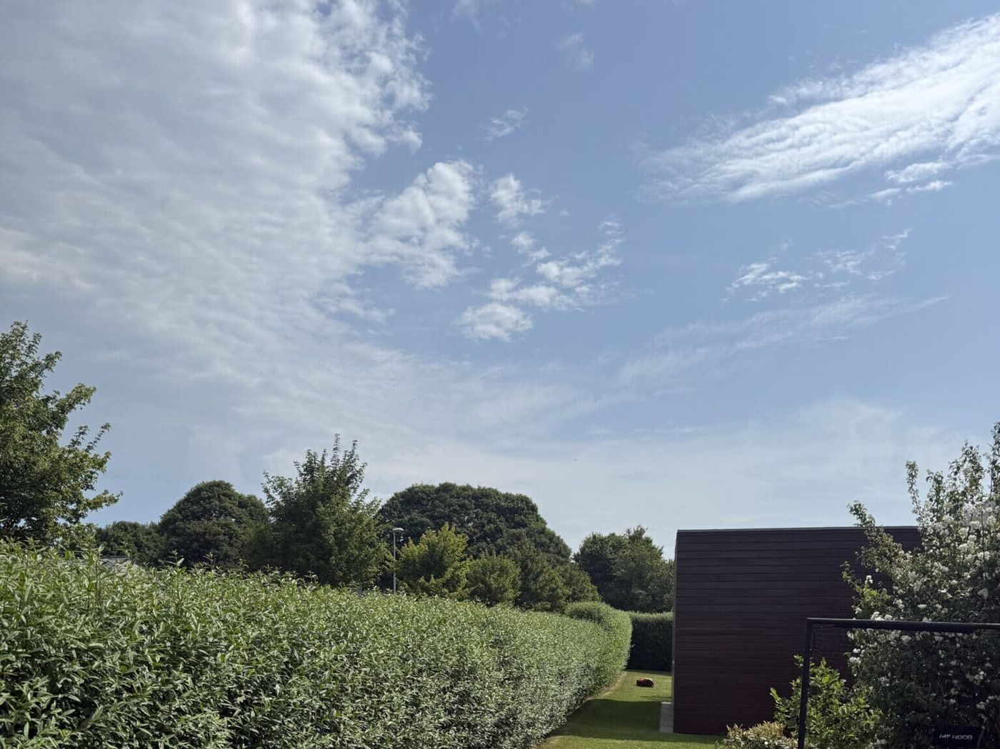
FørEfter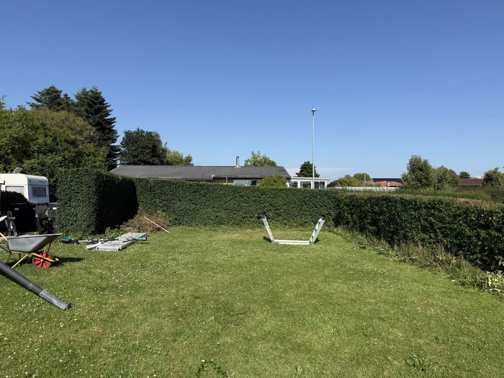
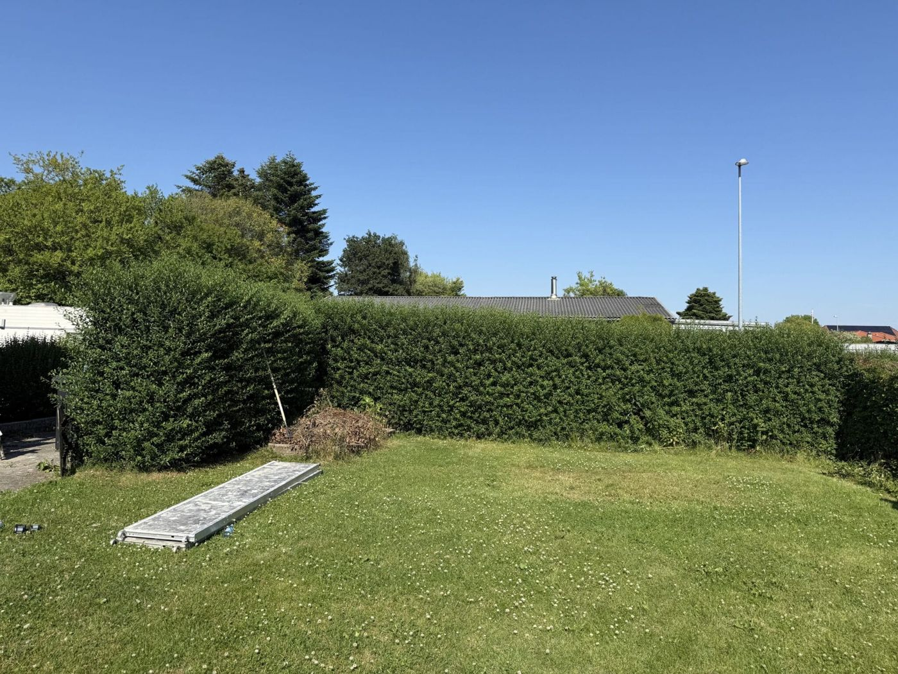
FørEfter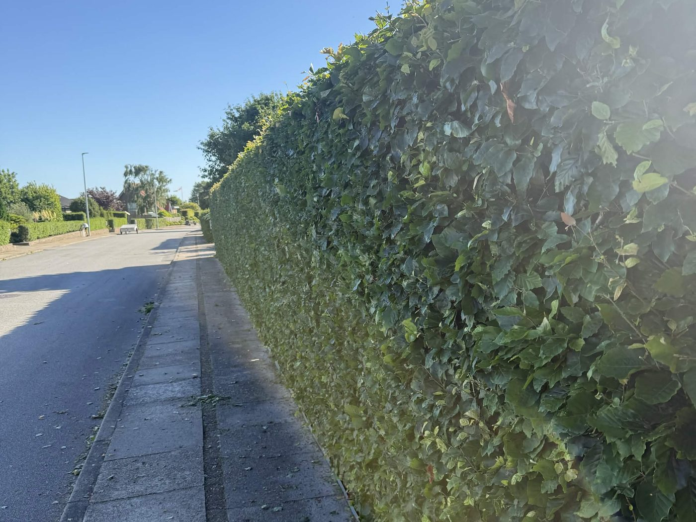
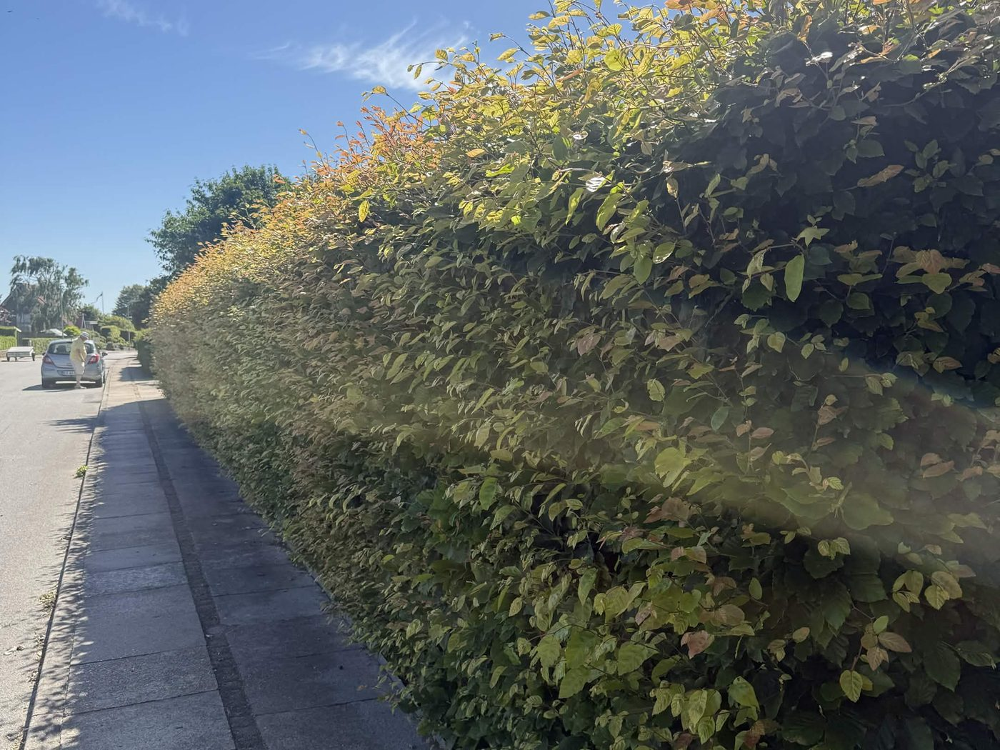
FørEfter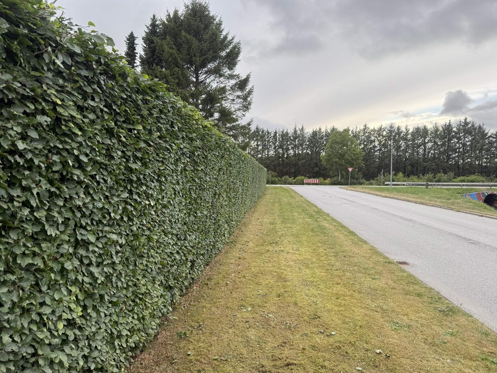
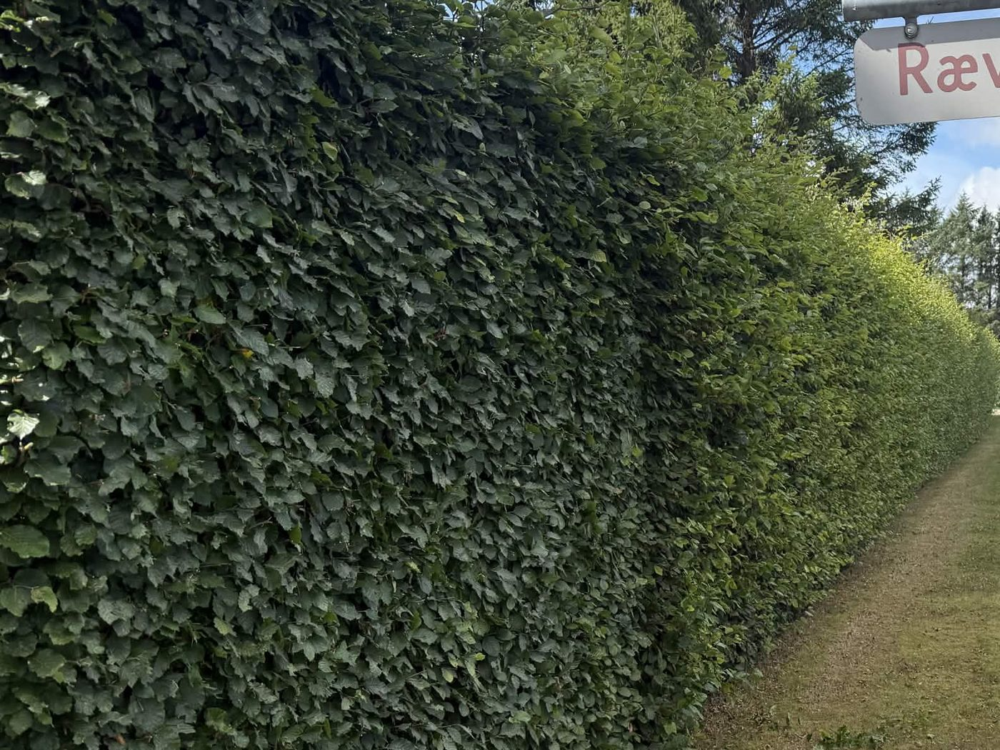
FørEfterFlere færdige hække
Tre fra sæsonen. Alle klippet af Tobias, alle i Aalborg og omegn.
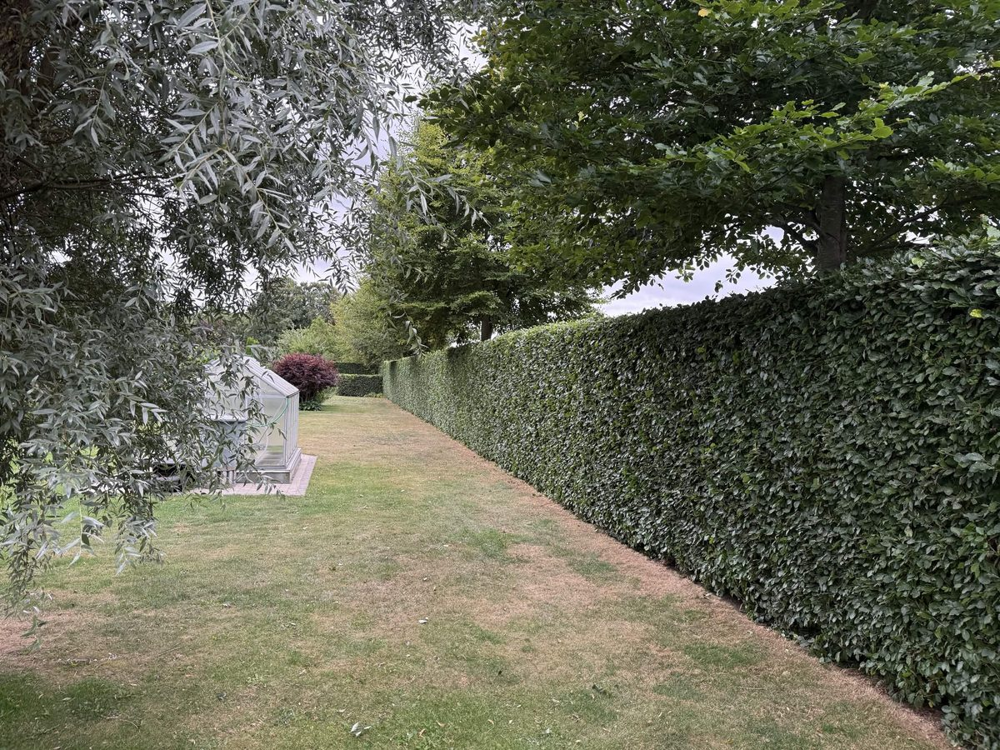
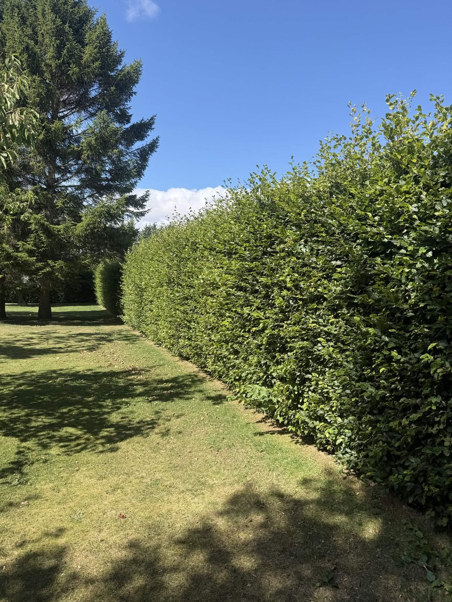
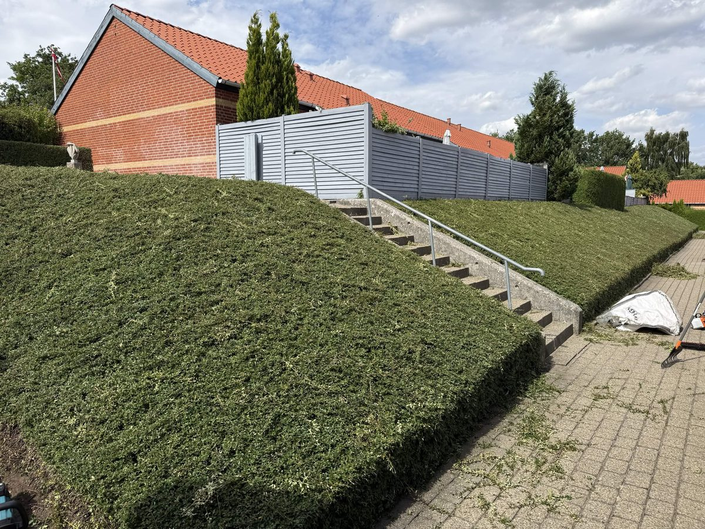
Vi lægger nye opgaver op, efterhånden som sæsonen skrider frem. Vil du se en hæk, der ligner din? Ring, så sender Tobias et billede.
Vil du have samme resultat?
Beregn prisen på din hæk på under et minut. Uforpligtende.